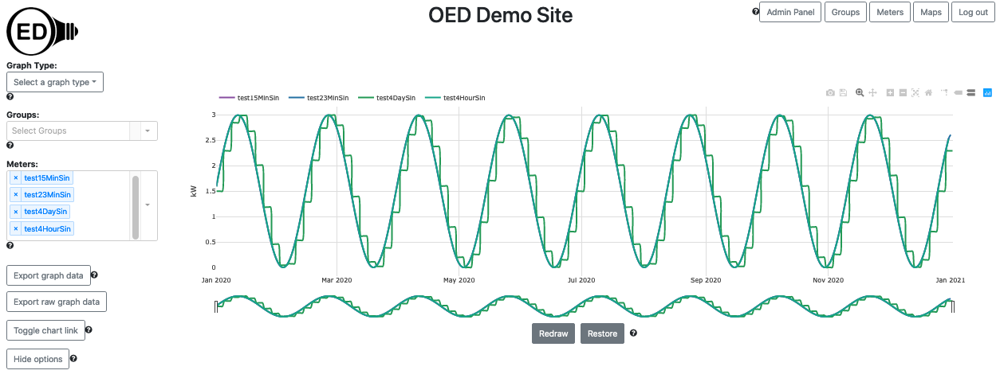
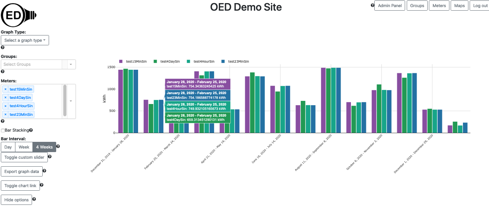
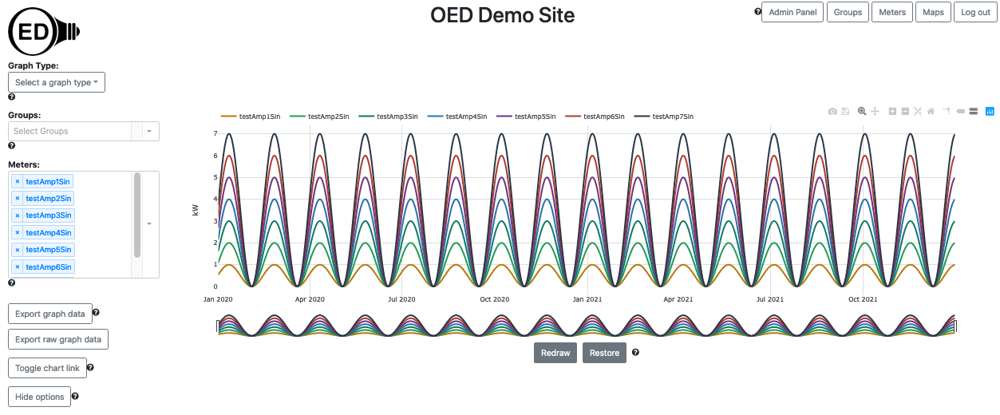
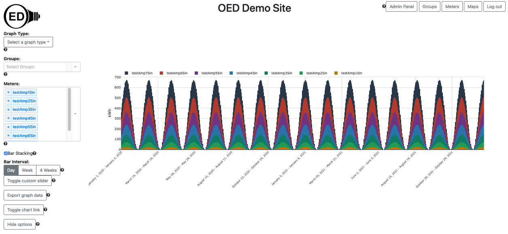
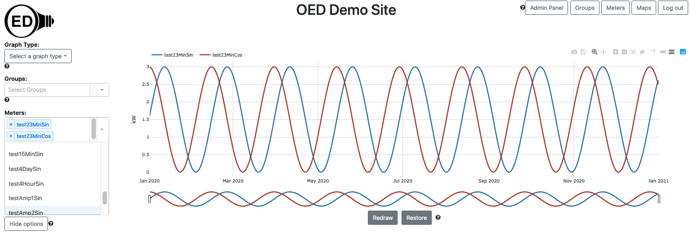
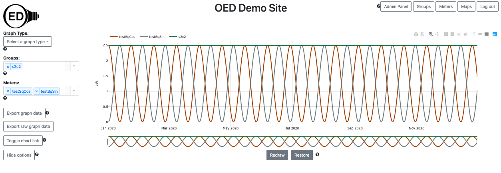
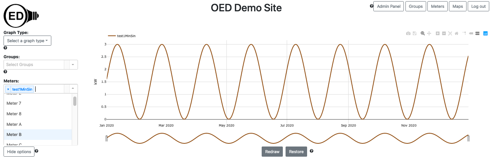
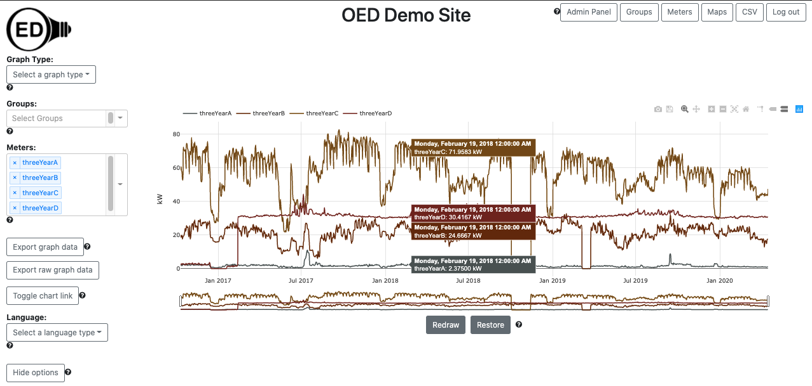

Developers want to have test meter data for OED development that is consistent, stable and does not require having access to actual meters. This describes how to get and load such meter test data.
The comparison graphic in OED uses the current time to compare usage over a given period to the same period shifted by that same period in the past. Since the test data has static dates, they will not include dates near the current time. This means that you cannot see comparison data. We will be posting directions to import test data that will allow comparison graphs.
For using the following data with maps, please see the test map page.
What follows assumes you have a properly installed and working OED but have not yet loaded in the reading data described here. (See comments at the top of the automated script at src/scripts/testData.sh to see how to remove the reading data if that is needed.) At a minimum you should be able to see the main OED page in a web browser (normally URL of localhost:3000). Normally the database is automatically created and works fine. If you get errors about the database then you need to address them before you can do this or get the test data in (if you get errors during this process). Finally, these directions are written assuming you are using Docker. It should be possible to do these outside Docker. Please let the project know if you are interested in directions for doing that.
The import of this data into OED uses the CSV import feature that is described in the CSV import help and pages linked from that page, esp. about readings. You do not need to know all those details but can get further information as needed.
The OED test data generation code can generate sine and cosine based data. It has several advantages:
It is easy to use this data. First, make sure you have OED running so it is available to respond to the CSV
requests to load the meter data. Next, run the
command
npm run testData. This may take a few minutes but when it completes there should be new meters
available in OED (you will need to refresh the web page to see them and this assumes you are logged in as an
admin user since the meters are not visible to others when automatically created) and the CSV files used will be
removed
unless
there
was an error. This generates all the standard test data except the one where readings are every minute since
that is
very large. Note the script will automatically refresh your OED reading data so the new test data can be
graphed. If this does not happen then an error likely occurred.
The following table gives a list of the available data and information about it. The meter name assumes you use
the
provided script to load the data. (If you want to generate the test data outside the usual script, the
<command name> is what you
use to create this dataset manually with
docker compose run web npm run <command name>. You will then need to load the
reading data
into OED as described reading import page >. The file will
have the name indicated and is located in the
src/server/test/db/data/automatedTests/ directory.) After running the script, you can you create a
group that contains the
testSqSin and testSqCos meters since the value should be constant at 2.5 and can be used for testing that groups
are working as expected.
| Description | Meter name | # points/file size |
|
File produced |
|---|---|---|---|---|
| Sine function with a period of 45 days and amplitude 3 for 1 year with points every 4 days | test4DaySin | 92 points/5kB | generateFourDayTestingData | fourDayFreqTestData.csv |
| Sine function with a period of 45 days and amplitude 3 for 1 year with points every 4 hours | test4HourSin | 2196 points/129kB | generateFourHourTestingData | fourHourFreqTestData.csv |
| Sine function with a period of 45 days and amplitude 3 for 1 year with points every 23 minutes | test23MinSin | 22915 points/1.4MB | generateTwentyThreeMinuteTestingData | twentyThreeMinuteFreqTestData.csv. |
| Sine function with a period of 45 days and amplitude 3 for 1 year with points every 15 minutes | test15MinSin | 35136 points/2.1MB | generateFifteenMinuteTestingData | fifteenMinuteFreqTestData.csv |
| Cosine function with a period of 45 days and amplitude 3 for 1 year with points every 23 minutes | test23MinCos | 22915 points/1.4MB | generateCosineTestingData | 23FreqCosineTestData.csv |
| Sine squared function with a period of 45 days and amplitude 2.5 for 1 year with points every 1 day | testSqSin | 366 points/21kB | generateSineSquaredTestingData | 2.5AmpSineSquaredTestData.csv |
| Cosine squared function with a period of 45 days and amplitude 2.5 for 1 year with points every 1 day | testSqCos | 366 points/21kB | generateCosineSquaredTestingData | 2.5AmpCosineSquaredTestData.csv |
| Sine function with a period of 45 days and amplitudes 1-7 for 2 years with points every 15 minutes | testAmp1Sin, testAmp2Sin, ... | 70176 points/4.2MB each; 29.4MB total | generateVariableAmplitudeTestingData | 15Freq1AmpSineTestData.csv, 15Freq2AmpSineTestData.csv, ... |
| Sine function with a period of 45 days and amplitude 3 for 1 year with points every 1 minute. This is normally used for specialized testing of a large number of readings and not automatically generated by the script. | test1MinSin | 527040 points/32MB | generateOneMinuteTestingData | oneMinuteFreqTestData.csv |
The following picture shows the meters test4DaySin, test4HourSin, test23MinSin & test15MinSine. It is designed to show how the number of points impact the line quality in OED and verify that varied reading rates do not impact the OED code. What you see is that the 4 day line is stair step because each group of 4 day points have the same value. The other meters are very similar in value. This shows that the daily averaging in OED is accurate. Note that in this and all line graphics, you will see the same value as you zoom in to see hourly or even minute level points. This is because the data is kW. The only change you will see is in the quality of the graphic if you zoom in so tight that you have limited points to graph. 
The following picture shows the same meters as above but as a bar graph with 4 week bars. In a perfect world, all the bars would have the same value for a given date range. As can be seen, there are small differences where the value varies more as the frequency of the readings goes down. This variation is due to the inaccuracy of low frequency readings as is normal. Note the last set of bars varies more due to a known issue in how the bar lengths are created. 
The following picture shows a line graphic of the sin values for the 7 different amplitudes (1-7). As expected, they have the same period with a different amplitude. Plus, it looks nice! 
The following picture is the same meters as above but for a bar graphic of 1 day that is stacked. It shows some stair step features due to only having one bar per day but has the same shape as the line graphic. Plus, it also looks nice! 
The following picture shows a sin and cos with the same amplitude. It should be noted that normally sin and cos and phase shifted so the high of one is the low of the other. You do not see that because the values were shifted to all be positive. 
The following picture shows the meters testSqSin & testSqCos along with a group containing both meters (c2s2). If OED is working properly then the group should have a constant value since sin^2 + cos^1 = 1 or the value of the amplitude in this case. This is a good test of whether groups work (for simple groups of only two meters). If you want to see how accurate OED is then just graph this group and you will see that the values only vary in the 9th significant digit (values go from 2.49999992 to 2.50000008). 
The following image shows sin with readings every minute. It is a very high quality version of the first picture with points that are less frequent. This data is not automatically generated and is normally only used to test OED's speed when there is lots of reading points. 
This data can show what happens with actual data. However, it is harder to see when things are off. It is provided as an alternative to the mathematical data but will probably be used less now that that data exists.
The table below lists the types of test data we have. The first four all have 3.5 years of electric data but for different meters so the values vary. The last one is a sample file that you can edit to create your own data.
| Description | Readings CSV | Size of Readings File |
|---|---|---|
| Contains actual electric data on an hourly basis for about 3.5 years (Oct. 2016-Apr. 2020) | threeYearA.csv | 1.3MB |
| Contains actual electric data on an hourly basis for about 3.5 years (Oct. 2016-Apr. 2020) | threeYearB.csv | 1.3MB |
| Contains actual electric data on an hourly basis for about 3.5 years (Oct. 2016-Apr. 2020) | threeYearC.csv | 1.3MB |
| Contains actual electric data on an hourly basis for about 3.5 years (Oct. 2016-Apr. 2020) | threeYearD.csv | 1.3MB |
| Sample file to edit for your own data | sampleReadings.csv | 0 MB |
Choose the file you want where clicking on the link in a web browser will download that file. Note you can load as many test data files as you want into a single OED instance.
You will want to have OED running during this process. Start it with Docker as you should have previously done. Log in as an admin user. Go to the CSV upload page using the "CSV" button in the top, right of the OED web page. You should default to the "Readings" tab which is what you want. Now do the following:
Below is a line graphic with the four 3.5 year meters. If all went well then this is what you should see.
If you don't see this then something is wrong and you should not continue this process and instead ask us for help. (See link at bottom of page)
You can download the sample data from the table above. You can edit the sampleReadings.csv file by opening it in you preferred editor where a spreadsheet program is fine as long as you make sure to save it as a CSV file. Remove the two sample readings on lines 2 and 3 of the file and create new lines with the data you want. Note that normally the end time of the previous point is equal to the start time of the next point in real meter data. You can put in as many lines as you want with readings. Please note that if you don't put in readings for a meter then you may get unexpected results when you graph that meter in OED. This file has a header row so it is easier to see what goes in each column. Once you are done editing and save the file in CSV format, import it the same way as the provided data above except you need to check the "Header Row" box since the file has a header row. Deal with any messages to correct problems and see the readings import page for more info on dealing with issues. Note if there are lots of errors then you need to look at the log or console where OED is running to see them all.
If you cannot load the data into the database or it disappears after shutting down OED, then you likely have a database issue. To test you can do the following:
You should now be done and have the test data in your OED development system. If something did not work then you can seek help from the project by contacting us.